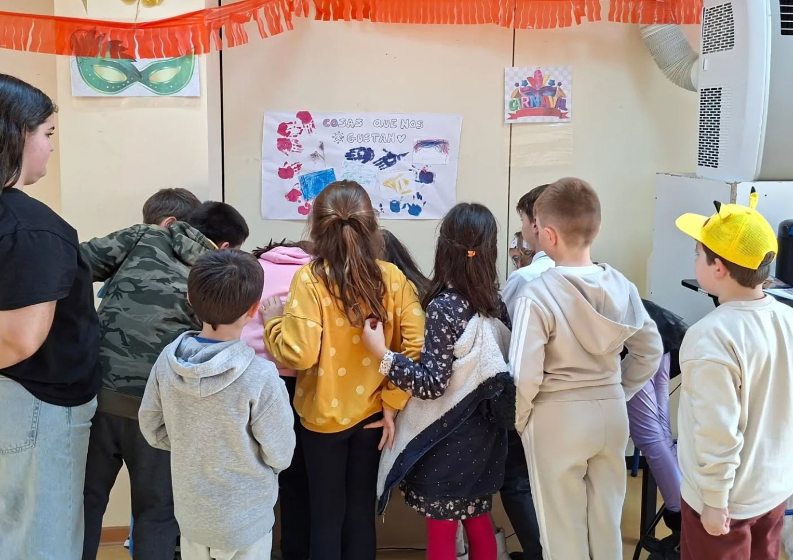
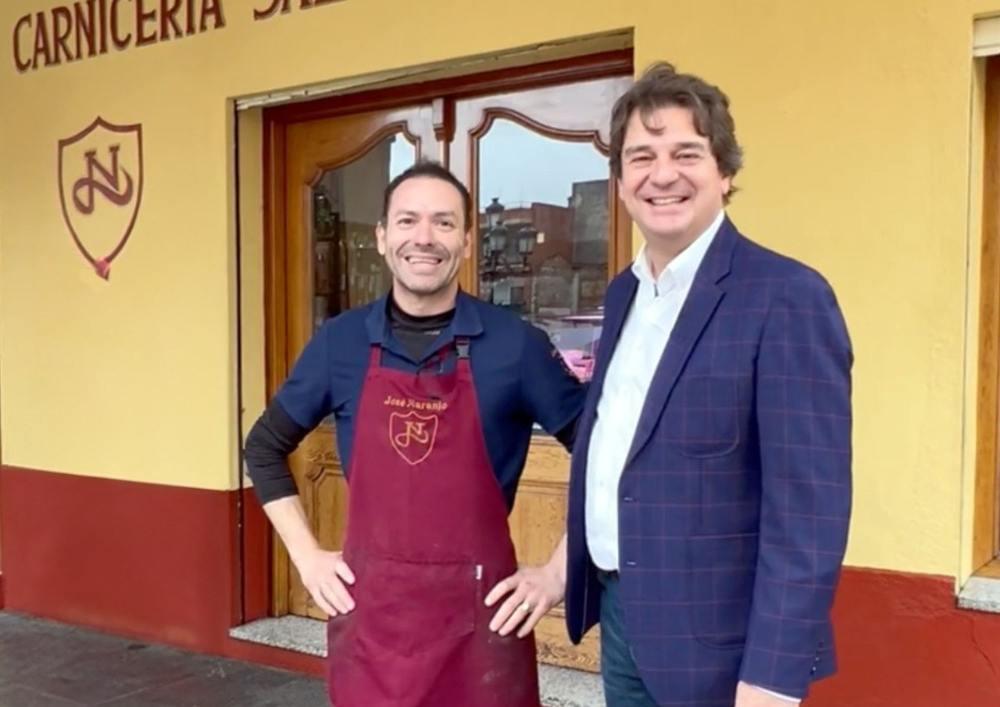

La Plaza de España inauguraba a las 11:00 el Carnaval de Fuenlabrada. El palpable entusiasmo de los más pequeños se mezclaba con la tenacidad de las reivindicaciones locales. La perfecta, femenina y rosada Barbie emergió en el desfile de la mano de la Asociación de Vecinos La Avanzada, pero convertida en caricatura y en vehiculo de denuncia. El armario de las muñecas estereotipadas se desplegó y, pocos segundos después, la bandera venezolana ondeaba lentamente. Casi de forma tímida, como si el disfraz de Maduro dudara en mostrarse, la imagen que había resonado en todos los medios se materializó en el desfile. El pulso geopolítico entre Washington y Caracas se coló así en la avenida comercial, mientras los asistentes seguían la escena con la mirada.
La pancarta de "Chega o Entroido" -aliento de la cultura gallega- y la tradición satírica del carnaval gaditano acercaron a los fuenlabreños múltiples influencias culturales junto a referencias de la cultura pop digital. Fuenlabrada marcó el ritmo de un mapa contemporáneo desplegado en la estética cotidiana de un barrio metropolitano. Entre bares y familias, el compás lo marcó también la percusión de Valkirias Batucada de Mujeres. Un mensaje claro de empoderamiento femenino al que se sumó la concejala de Feminismo, Raquel López, articulando la dimensión institucional del municipio con la promoción de la igualdad. En un ámbito históricamente erigido sobre una dimensión masculina, el Carnaval de Fuenlabrada dejó de ser solo espectáculo para consolidarse como espacio de representación cívica. El recorrido terminó en la plaza de la Constitución, donde José Manuel Naranjo -gerente del comercio más antiguo de la localidad- dio el Pregón en representación de todos los establecimientos. Naranjo cerraba así el despliegue de un amplio y diverso mapa cultural.
De comparsas a discurso
Los diferentes grupos del desfile fueron algo más que un pasacalles mientras las comparsas avanzaban al ritmo de la diversidad temática y cultural. En la última década, el Carnaval de Fuenlabrada se ha transformado en un discurso político-cultural que ya no es una mera celebración popular. Entre AMPAs como entidades formalmente inscritas, batucadas, coreografías que rezuman diversas culturas y pancartas cargadas de simbología social, Fuenlabrada se consagra como epicentro de celebración popular convertida en discurso.
La propia formulación del Ayuntamiento destapa esta intencionalidad. En la presentación oficial de la edición de 2026, la concejala de Cultura, Cristina Mora, declaraba que "las asociaciones y los vecinos y vecinas de Fuenlabrada son el alma del Carnaval". Fuenlabrada trata de perfilar esta reiteración desde su comunicación institucional bajo la premisa de que el Carnaval es "el momento de salir, compartir y disfrutar de un espacio común donde cada persona tiene su sitio", de acuerdo con las palabras de la edil Mora.
El Carnaval entra en el Boletín Oficial de la Comunidad de Madrid
La coreografía del Carnaval fuenlabreño siempre se ha movido encorsetada dentro de un esquema claro: un desfile coreografiado, comparsas escolares, un baile popular y el cierre ritual del Entierro de la Sardina. Los medios locales señalaban en 2016 la participación de 47 comparsas y una programación concentrada en el eje más reconocible del municipio. La ciudad acompañaba mientras la fiesta sucedía de forma casi automática, sostenida por un modelo tradicional que apenas se cuestionaba. Sin embargo, una década más tarde Fuenlabrada ha alterado su compás. El Carnaval de este año desplegó una programación de seis días articulada en torno a 58 entidades participantes. "Entidades" ha pasado a sustituir a "comparsa", y ese desplazamiento léxico no es inocente, sino que desvela que Fuenlabrada apuesta por una transformación estructural. El Carnaval deja de ser mera espontaneidad festiva para convertirse en una red organizada que incorpora la contemporaneidad cultural al calendario municipal.
La reestructuración no se percibe únicamente en la diversificación de participantes y actividades, sino en la entrada de la fiesta en el boletin oficial. Según el extracto de la convocatoria publicado en el Boletín Oficial de la Comunidad de Madrid (BOCM), el Ayuntamiento destinó 60.000 euros en subvenciones para asociaciones que participaron en el desfile y en el Entierro de la Sardina. El documento establece baremos económicos según el número de integrantes y exige además una "unidad temática" en las comparsas. La celebración adopta asi un esqueleto administrativo al incorporar fiscalización y reglamento. No desaparece lo popular; se institucionaliza. El Carnaval de Fuenlabrada se integra en la política cultural municipal, lo que explica el mapa contemporáneo que recorrió las calles del municipio.
Fuenlabrada se celebra en diferentes distritos
En 2025, el Ayuntamiento anticipaba su intención de que el Carnaval llegase a "todos los distritos". En términos urbanos, esto evidencia cómo las ciudades del sur metropolitano de Madrid reivindican su idiosincrasia a través de las fiestas populares. El modelo de 2016 concentraba el protagonismo en el centro; en cambio, las ediciones recientes distribuyen actividades por distritos como Loranca-Nuevo Versalles y Parque Miraflores. Se incluyen talleres previos en juntas municipales y se programan actividades específicas para adolescentes en el Espacio Joven. Este año, el programa convirtió los equipamientos públicos en escenarios activos de participación. La Asociación Arbifuenla, con sede en el edificio de la Junta Municipal de Distrito Vivero-Hospital-Universidad, organizó el "Escape Room: Don Carnal 2.0". El evento, de entrada gratuita y con inscripción previa, convocó a niños de entre 3 y 11 años para resolver enigmas en grupos diferenciados por edades. El Carnaval se transformó así en espacio de juego colaborativo y pedagogía lúdica.

También hubo espacio para el encuentro intergeneracional. La Phoenix Orquesta protagonizó un baile abierto en la carpa de la plaza de España, donde jóvenes y mayores compartieron repertorio y pista. Entre pistas infantiles y música popular, el Carnaval articuló juntas de distrito y asociaciones vecinales en una misma secuencia festiva. El Carnaval de Fuenlabrada se desplegó por la trama urbana y otorgó protagonismo al tejido asociativo del municipio. Más que concentrarse en un único escenario central, la fiesta ocupó la ciudad y permitió que la ciudad se reconociera en ella.
El tejido comercial toma el pregón

El Carnaval fuenlabreño de este año ha sido una apuesta por el corazón de Fuenlabrada. José Manuel Naranjo afirmaba que era "un honor" ser elegido pregonero de la festividad. Naranjo es el propietario del comercio más antiguo del municipio, fundado en 1890, y se erige como máximo exponente del comercio local. No es casual, ya que Fuenlabrada figura entre las actuales candidatas europeas en reconocimiento al pequeño comercio. Además, se señala la existencia de cerca de 3.000 establecimientos y una inversión municipal de aproximadamente dos millones de euros desde 2018 para impulsarlo. Así, Fuenlabrada inserta todos los elementos que la hacen propia, desde el comercio de proximidad hasta su identidad urbana.
El broche final para el Carnaval de Fuenlabrada ha sido el Entierro de la Sardina. Este también ha evolucionado al ser encabezado por la compañía de teatro de calle Morboria con el espectáculo Altar de los Muertos. Como máxima expresión del Día de los Muertos en México, Fuenlabrada bebía de esta inspiración para cumplir con la tradición española de enterrar la Sardina y, con ella, el desenfreno de Don Carnal. Desde las calles Luis Sauquillo y Las Navas, pasando por la fuente de Los Cuatro Caños hasta la calle del Ferial, ardió la Sardina en llamas mientras las diferentes Juntas de distrito de Loranca-Nuevo Versalles y Parque Miraflores también la enterraban entre plañideras y un espectáculo de fuego. Fuenlabrada dio paso a la etapa de ayuno y recogimiento que trae Doña Cuaresma, pero entró, al mismo tiempo, en la senda de un nuevo mapa para su Carnaval.